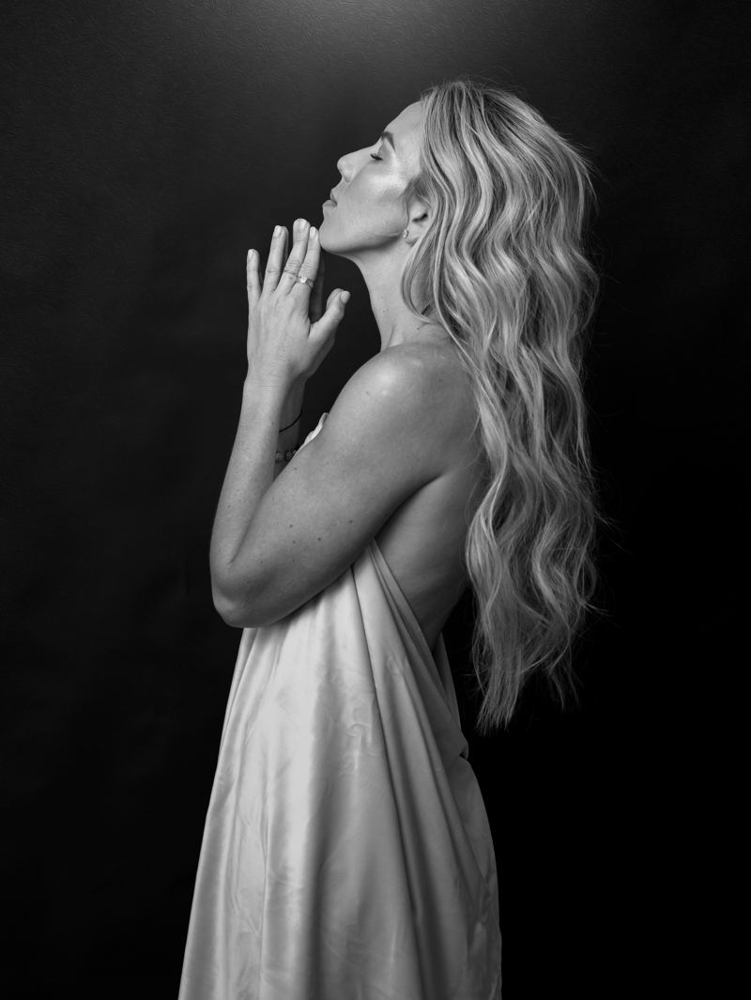

About Katie
I’m Katie Edmonds.
Certified life coach, podcast host, speaker, marathoner, and Reiki-attuned practitioner.

I’m interested in what happens when we stop running from ourselves.
But those are the titles. The work underneath them is much simpler: I’m deeply interested in what it means to be human.
Why we disconnect from ourselves. Why we stay quiet when something inside us is asking to speak. Why we numb. Why we perform.
And most importantly, how we find our way back.
Longer biography to be supplied by Katie01
Podcaster
02
Speaker
03
Certified Life Coach
04
Marathoner
05
Reiki Attuned


Join the Inward Collective
A Little More Inward.
Thoughts, questions, podcast episodes, and reminders to come back to yourself — delivered straight to your inbox.
No constant noise. Just something worth opening.
Preview — not connected yet.